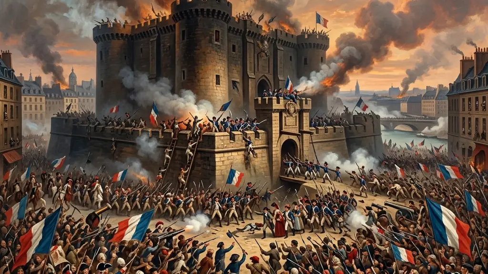
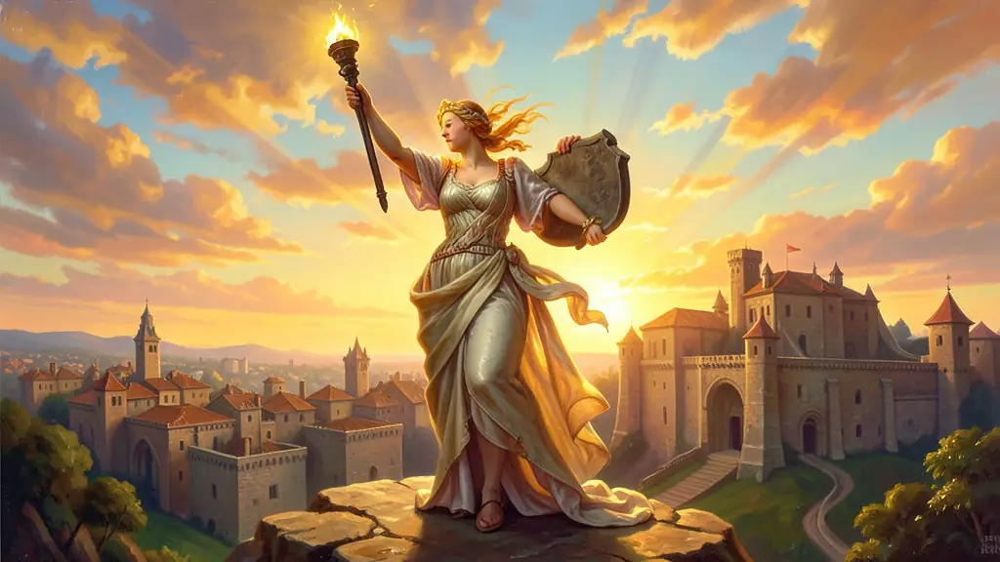
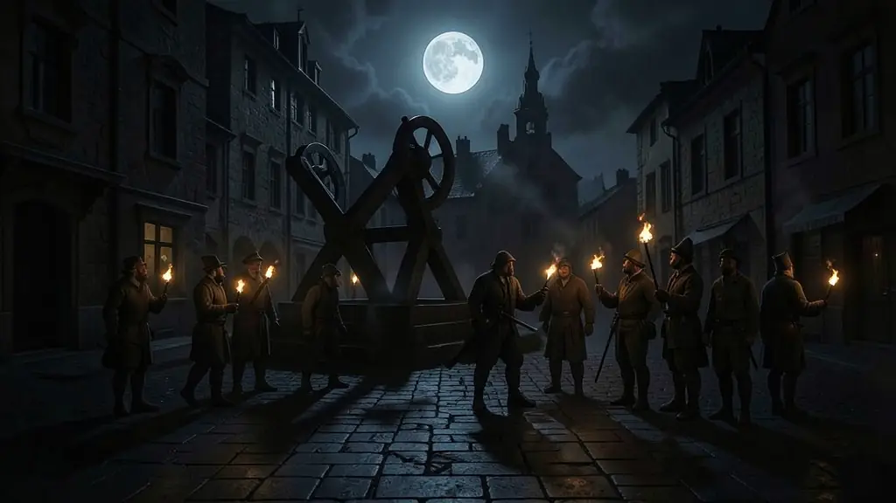
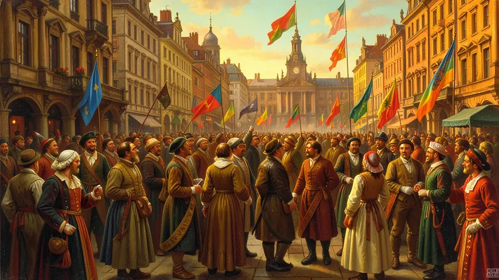

Capítulo 01
1. O Terceiro Estado e o Juramento da Sala de Jogo
Frustrados pelo sistema de voto onde cada estado tinha um voto (o que sempre dava 2 a 1 para o clero e nobreza), os representantes do 3º Estado trancaram-se em uma sala de jogo de péla e juraram que só sairiam dali com uma constituição escrita para a França. Foi o nascimento da democracia legislativa no país, desafiando a divindade do Rei.

Capítulo 02
2. Declaração dos Direitos do Homem e do Cidadão
Publicada em 1789, inspirada nos EUA e no Iluminismo, declarava que todos os homens nascem e permanecem livres e iguais em direitos. Ela garantia a liberdade de expressão, de religião e o direito à propriedade privada. Foi a certidão de óbito do feudalismo na Europa e a base de todas as constituições ocidentais modernas.

Capítulo 03
3. O Período do Terror (1793-1794)
Liderada por Maximilien Robespierre e Saint-Just, a fase jacobina buscava salvar a revolução de inimigos internos e externos (outras monarquias europeias que invadiram a França). Criaram o Comitê de Salvação Pública, o ensino laico gratuito e a abolição da escravidão nas colônias. Porém, o radicalismo levou ao medo generalizado e ao próprio Robespierre ser executado na guilhotina.

Capítulo 04
4. O Papel dos Sans-culottes
Os sans-culottes ('sem calções' de nobre) eram os artesãos, operários e pequenos comerciantes de Paris que formavam o braço armado da revolução nas ruas. Eram eles que faziam as barricadas e protegiam a convenção. Sem a força física e o desespero de fome desse grupo, a burguesia nunca teria conseguido derrubar Luís XVI.

Capítulo 05
5. A Era Napoleônica e o Código Civil
Napoleão encerrou os excessos revolucionários mas consolidou suas conquistas burguesas no 'Código Napoleônico'. Ele expandiu os ideais de liberdade religiosa e igualdade jurídica por toda a Europa via guerras, destruindo os velhos privilégios aristocráticos por onde passava. Foi através de suas invasões que a família real portuguesa fugiu para o Brasil em 1808.
A Revolução Francesa de 1789 foi o evento que marcou o início da Idade Contemporânea, ao destruir definitivamente as estruturas milenares do feudalismo e do absolutismo na Europa. Como analisa Eric Hobsbawm, ela foi a 'revolução da sua época', fornecendo o vocabulário, as ideologias e os modelos de organização política para o mundo inteiro ao longo do século XIX. A tomada da Bastilha simbolizou a queda do poder arbitrário e o início de uma era onde a 'nação' passou a ser a única fonte legítima de poder.
As fases da revolução — da Monarquia Constitucional à República Jacobina (o Terror) e o subsequente Diretório — demonstram a violenta disputa entre diferentes setores da burguesia e as massas populares (sans-culottes). Enquanto os girondinos buscavam reformas moderadas, os jacobinos, liderados por Robespierre, radicalizaram o processo através da execução do rei e da implementação de reformas sociais profundas. A instabilidade desse período abriu caminho para a ascensão de Napoleão Bonaparte, que consolidaria as conquistas burguesas sob uma ditadura militar expansionista.
O legado da Revolução Francesa é sintetizado no lema 'Liberdade, Igualdade e Fraternidade'. No entanto, para o Enem, é crucial perceber as contradições do movimento: a liberdade proclamada era prioritariamente econômica, a igualdade era jurídica (e não social) e a 'fraternidade' muitas vezes era limitada pelos interesses nacionais. Mesmo assim, ao estabelecer o fim dos privilégios por nascimento e a soberania da lei, a revolução mudou permanentemente a relação entre Estado e indivíduo, transformando súditos em cidadãos.
Fonte: HOBSBAWM, Eric. A Era das Revoluções (1789-1848). Rio de Janeiro: Paz e Terra, 2012.
Atividades interativas
Questões para fixar
Durante a Revolução Francesa, o grupo dos Jacobinos representava a ala mais radical. Qual figura histórica líder desse grupo é associada ao período do 'Terror'?
A Queda da Bastilha, em 14 de julho de 1789, tornou-se o principal símbolo da Revolução Francesa por que: